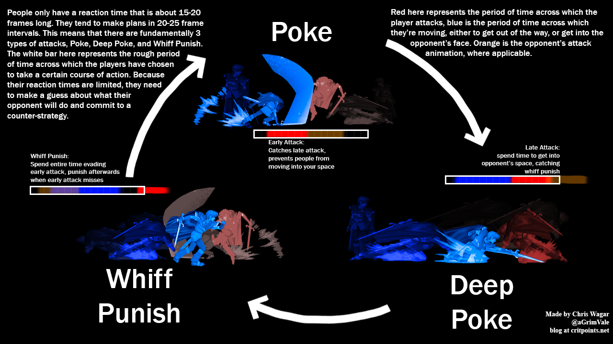
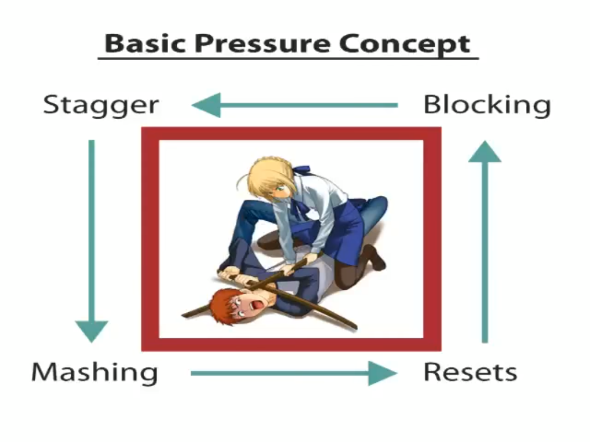
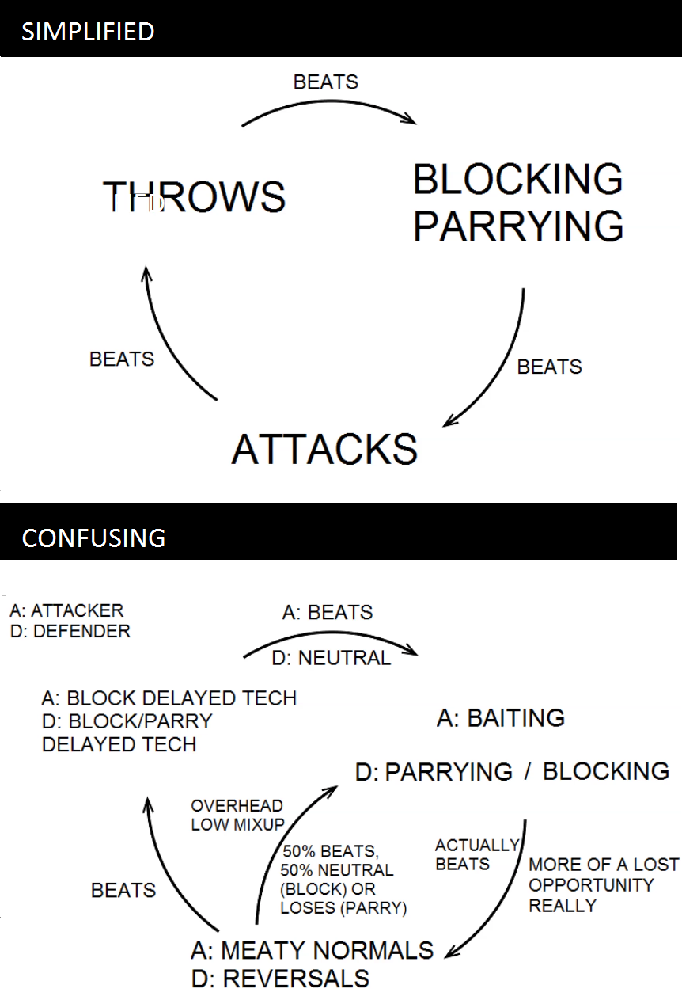

Probably because not as many people have tried to competitively play a fighting game as have tried to competitively play, for example, FPS games, I think it's common for people to think that fighting games are way too complicated when really it's just that they are lacking a model of the game that would come from having played this genre of game for a while or from a friend who has played this genre of game for a while explaining it to you. I'll be your friend though. Playing fighting games is basically switching between several high-speed, more physically dexterity-demanding games of rock paper scissors. Once you understand this, everything about them makes so much more sense.
Most (all?) fighting games start off in a neutral state - that is to say - a state where neither character is in blockstun (defending), hitstun (being combo'd), or knockdown (wakeup). Because neither character is in one of these disadvantageous states (and likewise, neither character is in the complimenting advantageous states), the game is considered to be in neutral. From a neutral state, there's three main categories of action that you can look to make in order to win neutral, and move into an advantageous gamestate:
This image from Celia Wagar's Footsies in Melee pretty succinctly explains what each of the three options are, and why they beat each other. I won't rephrase it, because it's fantastic.
It's worth emphasizing two things:
One of the most important parts of these games is identifying where and when your character is strongest, and trying to leverage that strength.
When somebody wins the neutral, it usually results in one of two things - a combo, or offense. You are on offense when your opponent is being forced to block an onslaught of attacks, generally trying to mix your opponent up between strikes that must be blocked and throws that must be teched, or strikes that must be blocked high and strikes that must be blocked low. The end goal is to convert an opening into as much damage as you can using a combo.
I don't know where this image is originally from, but you'll see it floating around various fighting game Discords. It's a good image, but it's kind of confusing if these words don't make intuitive sense to you, so I'm going to edit it a little bit:

It's worth noting that inherently, blocking and staggering don't have much intrinsic risk:
As before, it's also worth noting that some characters have stronger offense than others (e.g. more plus frames, difficult to block mixups, high reward for stray hits, etc.) and some characters have stronger defense than others (e.g. meterless invincible reversals, alpha counters, parries, fast buttons for mashing). 99.9999% of the time though, being on offense is desirable, and being on defense is undesirable.
Certain attacks induce a knockdown state, and oftentimes good combos end in knocking the opponent down, because this state is so disadvantageous. When you are facing down a knocked down opponent, you are considered to be performing okizeme, or simply "oki" for short. The reason oki is so great, is that as your opponent is getting up off of the ground (waking up), they are invulnerable, but they also can't press any buttons. Which means that whatever the two of you opt for as your opponent wakes up, you will be able to do it faster, by channeling the startup as they wake up. The okizeme/wakeup triangle looks something like this:
This image is taken from Bafael's primer on 3rd Strike Okizeme 3rd strike has a very famous parry mechanic. Your game might not have one. Parrying essentially serves the same role as blocking in this triangle, so feel free to ignore it.
If this image doesn't make intuitive sense to you, I recommend watching Bafael's video. It's a fantastic video, and I'm not going to bother rephrasing it, because it's fantastic.
Combos are important, but I don't really discuss them in depth here, because combos are less of a game you play against your opponent, and more a game you play against your own situational awareness and dexterity. While they are an important game state, it's easiest to think of the "combo" game state as being a reward for winning big in one of the other aforementioned gamestates. Or a punishment, depending on which side you're on.
The game (typically) starts in neutral. The goal of neutral is to advance into an advantageous state - typically either offense, okizeme, or a combo (combos usually lead to okizeme). Some characters are happy to keep the game in neutral forever, because that is where they thrive, and so neutral for them is itself an advantageous state.
The goal in an advantageous state is to leverage your advantage into damage. You win by killing your opponent after all.
The goal in a disadvantageous state is to leave the disadvantageous state.
Consider what your character's strongest options are during each game state. Take advantage of those options.
Consider what your opponent's strongest options are during each game state. Play around those options.
At some point, you will notice your opponents are also taking advantage of their strongest options and playing around your strongest options. Then you will find that you are basically switching between several high-speed, more physically dexterity-demanding games of rock paper scissors.